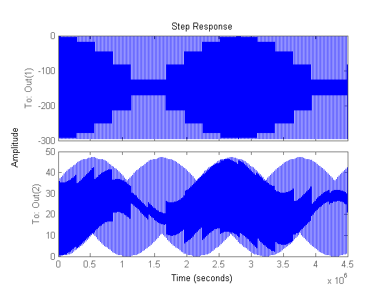

John Clouse ASEN 5014 Final project
Contents
Init, sail force analysis
close all title_plots = 0; %zero for report figures. lw = 1; % Line Weight fs = 20; % Font Size SysModel if 0 alpha_range = 0:0.01:pi/2; Ft = P*A_sail*(1-rho_s)*cos(alpha_range).*sin(alpha_range); Fn = P*A_sail*((1+rho_s)*cos(alpha_range).*cos(alpha_range)... +2/3*rho_d*cos(alpha_range)); figure plot(alpha_range*180/pi,Ft,'LineWidth',2) hold on plot(alpha_range*180/pi,Ft_max*alpha_range,'g','LineWidth',2) for ii = 1:length(alpha_range) if abs((Ft(ii) - Ft_max*alpha_range(ii))/Ft(ii)) > 0.05 x_five_percent = ii; break end end plot([x_five_percent x_five_percent],... [max(Ft_max*alpha_range) min(Ft_max*alpha_range)],'r--','LineWidth',2) set(gca, 'FontSize', 20) % title('F_{T} Solution', 'FontSize', 24) legend('Actual', 'Linearized', '5% Difference') xlabel('{\alpha} (degrees)', 'FontSize', 24) ylabel('F_{T} (N)', 'FontSize', 24) figure plot(alpha_range*180/pi,Fn,'LineWidth',2) hold on plot(alpha_range*180/pi,Fn_max-0*alpha_range,'g','LineWidth',2) for ii = 1:length(alpha_range) if abs((Fn(ii) - Fn_max-0*alpha_range(ii))/Fn(ii)) > 0.05 x_five_percent = ii; break end end plot([x_five_percent x_five_percent],... [max(Fn) min(Fn)],'r--','LineWidth',2) set(gca, 'FontSize', 20) % title('F_{N} Solution', 'FontSize', 24) legend('Actual', 'Linearized', '5% Difference') xlabel('{\alpha} (degrees)', 'FontSize', 24) ylabel('F_{N} (N)', 'FontSize', 24) end if 1 system = ss(A,B,[1 0 0 0;0 0 1 0],0); figure step(system,stepDataOptions('StepAmplitude',0.1)); end
I = 6.0000e+03 Rank of P: 4 Rank of O: 4
Set up the first controller
close all figWidth = 1120; % pixels figHeight = 840; % pixels r2d = 180/pi; % The design parameters PO_desired = 10/100; PS_desired = 5/100; PO = 9/100; PS = 4/100; %Settle percentage Ts = 3600*1.5;%1200; t = 0:0.01:Ts*3; % Get the desired dominant poles with SISO equations. damp_times_wn = -log(PS)/Ts damping_ratio = -log(PO)/sqrt(pi*pi+(log(PO))^2); wn = damp_times_wn/damping_ratio; wd = wn*sqrt(1-damping_ratio^2); real_offset = -.1;% use this to tune the other poles P = [complex(-damp_times_wn+real_offset, wd) ... complex(-damp_times_wn+real_offset, -wd) ... complex(-damp_times_wn, wd) complex(-damp_times_wn, -wd)]; K = place(A,B,P); % Try out feedforward (not used) F = inv(C*inv(-A+B*K)*B); A_CL = A-B*K; B_CL = B*F; CL_system = ss(A_CL, B_CL, eye(4),0); OL_system = ss(A,B,C,0); % Integral control A_OL_Aug = [A,zeros(4,1);-C, zeros(1)]; B_OL_Aug = [B;zeros(1)]; P_Aug = [-100,P]; K_Aug = place(A_OL_Aug,B_OL_Aug,P_Aug); K = K_Aug(1:4); % gain for the nominal states KI = K_Aug(5); % Integral gain A_CL_Aug = [A-B*K, -B*KI; -C, zeros(1)]; B_CL_Aug = [zeros(4,1);eye(1)]; Int_sys = ss(A_CL_Aug, B_CL_Aug, [C 0], 0); % Open-loop: stable response r = 35*pi/180; analysis_set = 'OL_Stable'; figure('Position', [0, 0, figWidth, figHeight]); OL_t = 0:0.01:3600*5; y_ol = lsim(OL_system,repmat(0.0001,1,length(OL_t)),OL_t); plot(OL_t/3600,y_ol*r2d,'LineWidth',lw) set(gca, 'FontSize', fs) if title_plots title(... sprintf('OL lsim Results: Step reference at %.1f degrees', r*180/pi)); end ylabel('\alpha (deg)','FontSize',fs) xlabel('Time (hr)','FontSize',fs) print(['Report/' analysis_set],'-dpng') % Open-loop: unstable response analysis_set = 'OL_Unstable'; figure('Position', [0, 0, figWidth, figHeight]); OL_t = 0:0.01:1800; y_ol = lsim(OL_system,repmat(0.01,1,length(OL_t)),OL_t); plot(OL_t,y_ol*r2d,'LineWidth',lw) set(gca, 'FontSize', fs) if title_plots title(... sprintf('OL lsim Results: Step reference at %.1f degrees', r*180/pi)); end ylabel('\alpha (deg)','FontSize',fs) xlabel('Time (sec)','FontSize',fs) print(['Report/' analysis_set],'-dpng') % Feedforward controller (ended up opting for integral control) figure lsim(CL_system,repmat(r,1,length(t)),t) title(... sprintf('CL lsim Results: Step reference at %.1f degrees', r*180/pi)); y = lsim(CL_system,repmat(r,1,length(t)),t); % Test out the integral controller analysis_set = 'Ctrl1'; y_int = lsim(ss(A_CL_Aug, B_CL_Aug, eye(5), 0),repmat(r,1,length(t)),t); plotSailSysResp( analysis_set,y_int,t,K_Aug,r,Ts,600,title_plots )
damp_times_wn = 5.9609e-04 Warning: Error occurred while evaluating listener callback.
Error using preparehg (line 37)
Need a handle to a Figure object.
Error in prepare (line 47)
pj = preparehg( pj, h );
Error in print>LocalPrint (line 262)
pj = prepare( pj, h );
Error in print (line 231)
LocalPrint(pj);
Error in plotSailSysResp (line 43)
print(['Report/' analysis_set '_Alpha'],'-dpng')
Error in SailAttitudeProject (line 144)
plotSailSysResp( analysis_set,y_int,t,K_Aug,r,Ts,600,title_plots )
Observer in loop
L = place(A',C',[-5,-6,-7,-8]*1e-3)';
A_Obs_Aug = [A_OL_Aug-B_OL_Aug*K_Aug,B_OL_Aug*K_Aug(1:4);
zeros(4,5),A-L*C];
B_Obs_Aug = [zeros(size(B));1;zeros(length(L),1)];
C_Obs_Aug = [C, 0, zeros(1,length(L))];
rank(ctrb(A',C'));
C_Obs_AugFake = [eye(9)];
Obs_system = ss(A_Obs_Aug, B_Obs_Aug, C_Obs_AugFake, 0);
Controller 1 + observer
r = 35*pi/180; analysis_set = 'Ctrl1Obs'; y_obs=lsim(Obs_system,repmat(r,1,length(t)),t); plotSailSysResp( analysis_set,y_obs(:,1:5),t,K_Aug,r,Ts,150,title_plots ) figure('Position', [0, 0, figWidth, figHeight]); colors = {'b','g','r','k'}; for ii = 6:9 plot(t/3600,y_obs(:,ii)*r2d,colors{ii-5},'LineWidth',lw) hold on end set(gca, 'FontSize', 20) xlabel('Time (hr)','FontSize',fs) ylabel('Error','FontSize',fs) l = legend({'\alpha error (deg)', '\alpha rate error (deg/s)', ... '\delta error (deg)', '\delta rate error (deg/s)'},'FontSize',fs); print(['Report/' analysis_set '_ObsErr'],'-dpng')
Controller 1 + Observer with error
r = 0;
r = 35*pi/180; analysis_set = 'Ctrl1ObsError'; sensor_error = .05*pi/180; y_obs_error = ... lsim(Obs_system,repmat(r,1,length(t)),t,[0,0,0,0,0,sensor_error,0, 0, 0]); plotSailSysResp( analysis_set,y_obs_error(:,1:5),t,K_Aug,r,Ts,3600,title_plots ) figure('Position', [0, 0, figWidth, figHeight]); colors = {'b','g','r','k'}; for ii = 6:9 plot(t/3600,y_obs_error(:,ii)*r2d,colors{ii-5},'LineWidth',lw) hold on end set(gca, 'FontSize', 20) xlabel('Time (hr)','FontSize',fs) ylabel('Error','FontSize',fs) l = legend({'\alpha error (deg)', '\alpha rate error (deg/s)', ... '\delta error (deg)', '\delta rate error (deg/s)'},'FontSize',fs); print(['Report/' analysis_set '_ObsErr'],'-dpng') % set(l,'FontSize',12)
LQR
Q_wts = [1,1,10000,1,1]; Q_wts = Q_wts/sum(Q_wts); state_max = [pi/2, 0.01, pi/6, 0.01, 0.01]; Q = diag(Q_wts.*Q_wts./(state_max.*state_max)); rho_R = 1000; u_max = 100; R = rho_R/u_max; [K_LQR, W, E] = lqr(A_OL_Aug,B_OL_Aug,Q,R); A_Obs_LQR = [A_OL_Aug-B_OL_Aug*K_LQR,B_OL_Aug*K_LQR(1:4);zeros(4,5),A-L*C]; B_Obs_LQR = [zeros(size(B));1;zeros(length(L),1)]; C_Obs_LQR = [C, 0, zeros(1,length(L))]; C_Obs_LQRFake = [eye(9)]; LQR_system = ss(A_Obs_LQR, B_Obs_LQR, C_Obs_LQRFake, 0); eig(A_OL_Aug-B_OL_Aug*K_LQR); % Eigenvals of this CL system r = 35*pi/180; analysis_set = 'CtrlLqrObs'; y_lqr = lsim(LQR_system,repmat(r,1,length(t)),t); plotSailSysResp( analysis_set,y_lqr(:,1:5),t,K_LQR,r,Ts,3600,title_plots ) % Observer error plot figure('Position', [0, 0, figWidth, figHeight]); colors = {'b','g','r','k'}; for ii = 6:9 plot(t/3600,y_lqr(:,ii)*r2d,colors{ii-5},'LineWidth',lw) hold on end set(gca, 'FontSize', 20) xlabel('Time (hr)','FontSize',fs) ylabel('Error','FontSize',fs) l = legend({'\alpha error (deg)', '\alpha rate error (deg/s)', ... '\delta error (deg)', '\delta rate error (deg/s)'},'FontSize',fs); print(['Report/' analysis_set '_ObsErr'],'-dpng')
LQR, observer error
r=0;
r = 35*pi/180; sensor_error = .05*pi/180; analysis_set = 'CtrlLqrObsError'; y_lqr_error = lsim(LQR_system,repmat(r,1,length(t)),t,... [0,0,0,0,0,sensor_error,0, 0, 0]); plotSailSysResp( analysis_set,y_lqr_error(:,1:5),t,K_LQR,r,Ts,3600,title_plots ) % Observer error plot figure('Position', [0, 0, figWidth, figHeight]); colors = {'b','g','r','k'}; for ii = 6:9 plot(t/3600,y_lqr_error(:,ii)*r2d,colors{ii-5},'LineWidth',lw) hold on end set(gca, 'FontSize', 20) xlabel('Time (hr)','FontSize',fs) ylabel('Error','FontSize',fs) l = legend({'\alpha error (deg)', '\alpha rate error (deg/s)', ... '\delta error (deg)', '\delta rate error (deg/s)'},'FontSize',fs); print(['Report/' analysis_set '_ObsErr'],'-dpng')
Print out the diff between the two controllers' observer errors
analysis_set = 'Ctrl1_LQR_error_diff'; figure('Position', [0, 0, figWidth, figHeight]); colors = {'b','g','r','k'}; for ii = 6:9 plot(t/3600,(y_lqr_error(:,ii)-y_obs_error(:,ii))*r2d,colors{ii-5},'LineWidth',lw) hold on end set(gca, 'FontSize', 20) xlabel('Time (hr)','FontSize',fs) ylabel('Difference in Error','FontSize',fs) l = legend({'\Delta \alpha error (deg)', '\Delta \alpha rate error (deg/s)', ... '\Delta \delta error (deg)', '\Delta \delta rate error (deg/s)'},... 'FontSize',fs); print(['Report/' analysis_set '_ObsErr'],'-dpng')
Monte Carlo Analysis
Disturbance solar torque
if 0 MC; end
Model verification
A little ODE45 verification of the system. If the gimbal torque holds the boom still, there should be an oscillation of \alpha Anon fcn to compute the required torque to hold the boom still wrt the sail
torque_hold = @(X,A,B) -dot(A(4,:),X)/B(4); % Anon fcn for state integration. state_dot = @(t,X) A*X + B*torque_hold(X,A,B); [t_out, X_out] = ode45(state_dot,[0 3600*12],[0;0;5*pi/180;0]); T = []; for ii = 1:length(X_out) T(ii) = torque_hold(X_out(ii,:)',A,B); end figure plot(t_out, X_out(:,1)) hold on plot(t_out, X_out(:,3),'r') ylabel('Angle (rad)') xlabel('Time (sec)') legend('\alpha','\delta') figure plot(t_out, T) ylabel('Gimbal Torque (N-m)') xlabel('Time (sec)')